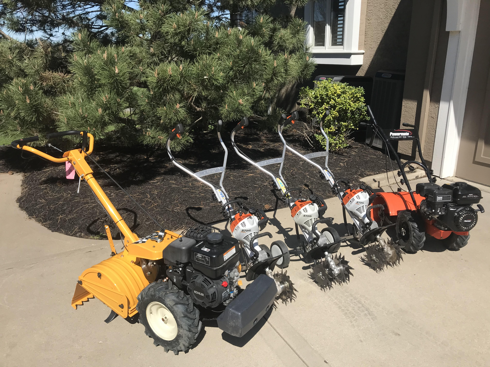
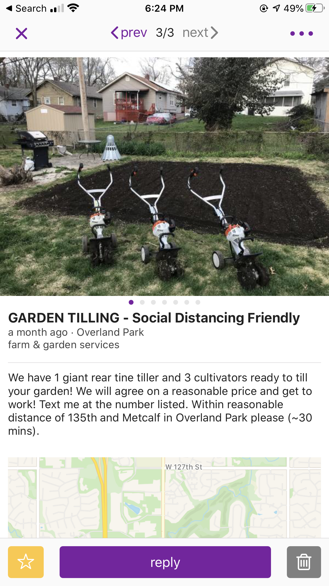

My 2 brothers and I currently run a garden tilling business. We own three small gas-powered “cultivators” and one huge 4-cycle gas-powered “rear-tine tiller.” This is a seasonal business that picks up during early April and extends to the end of Spring with some jobs in Autumn. One problem that we are having is having a solid customer base that we know will return every year. It seems that every year we post ads online and get random jobs and then do not get those jobs next year. We need to find a way to have a solid customer base that we can engage with throughout the year and have those returning jobs next year. Another problem we have is we do not know our most effective marketing tool - Craigslist, Facebook, Yard Signs? We need to find a way to figure out our most effective marketing strategy and concentrate our efforts there. Finally, we need a way to show our customers our work – perhaps a website or a Facebook page – so they know they are getting.
Considerations
Website
Tech vs. Non-Tech Options
Online Marketing Platforms
Process Took in Choosing Problem
I choose to create my own problem for this situation because it is a real-world situation that could have some real would outcomes. I own this garden business and we have encountered the problems I have outlined above. How are we going to sustain our customer base for 10 years to come? What is our best marketing strategy? I run the business with my dad and two brothers, and we want to see some solutions to these questions. So, instead of choosing a pre-defined problem – I went with one that would actually solve a problem in my life! To solve these problems, I plan on creating some sort of access database of our customers, a better craigslist website, a map of where we will put our yard signs. Through my research, I am sure I will come up with more solutions to our problem.
Basic Information

Click on the picture to see more of our work. (JavaScript Requirement)
 Above is a picture of our tillers, click on the picture to see some of the gardens we have tilled this year. That is just a few gardens we have tilled, we have probably tilled over 40 gardens and made over $2,000 this spring. We have put up a craigslist ad (pictured to the right) which I plan on revising through this project. We have also put up Facebook ads which surprising were not that effective and yard signs. We charge $60 for a 100 square foot garden (10x10) and $100 for a 400 square foot garden (20x20). From there we derive an equation that gives us “x” as square footage and “y” as price: y = (2/15) * x + 46.6667. Usually, that gives us a fair price but there is always room for negotiation for the customer. We try to till the gardens as soon as possible so we do not lose any business. A major damper for us is the rain, so we must get our job done when things are dry. We always are willing to till previously made gardens for a fair price, but for us to till grass/hard ground add an extra charge. Utilities also must be marked for that to be done.
Rough Draft Potential Solutions for Reference
Keeping ordered records is going to be key to having that returning customer base. I must instruct my brothers to get the customer’s contact information, price, and a picture of the garden we tilled. Perhaps we could keep some sort of access or excel database of all the customers on our phones. We could separate the entries into different types of gardens or locations so when we contact these customers, we could focus on knocking out an area or a certain garden. Our column headers could be “Phone Number, Last Name, First Name, Address, Price, Garden Size, Notes, Picture.” We could use the phone number as a primary key in this case. Currently, our way of contacting previous customers is from a poorly organized notes section in my phone. I am starting to transition to making nice contacts in my phone for customers but I would like to go a step farther. When it comes time to contact our customers, we could use some sort of text blasting service. More research will be having to be done which particular company we would want to use for this service. Also, once we have completed our jobs, we could send our customers a google form survey to easily hang on to their information and see what they liked and what they did not like about our service.
When it comes to marketing, we need to keep precise records on what website we are getting the most hits on. Perhaps a “Where did you hear about us?” could be incorporated into the google forms survey. After we decide where we are getting the most hits, we will concentrate more of our marketing efforts towards that platform. Finally, one of the biggest things I think we can do for this business is to create a website to showcase our work. We could have a section that shows our previous jobs – I have tons of pictures –, customer testimonials, pricing information, an about us section, survey, and a contact us page. This would be huge in terms of helping our business grow and helping our business to become more legitimate.